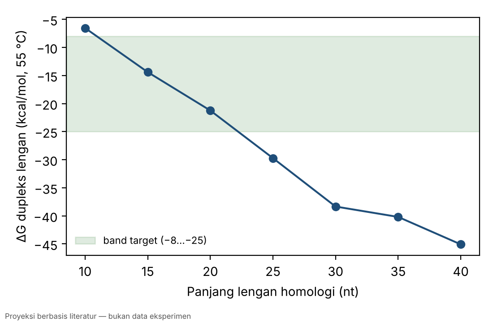
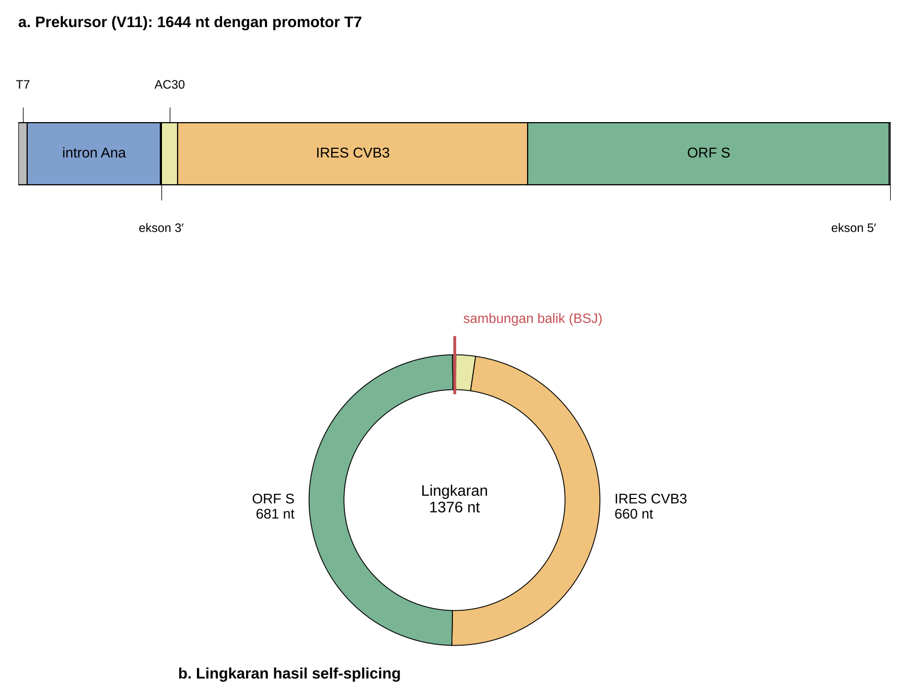
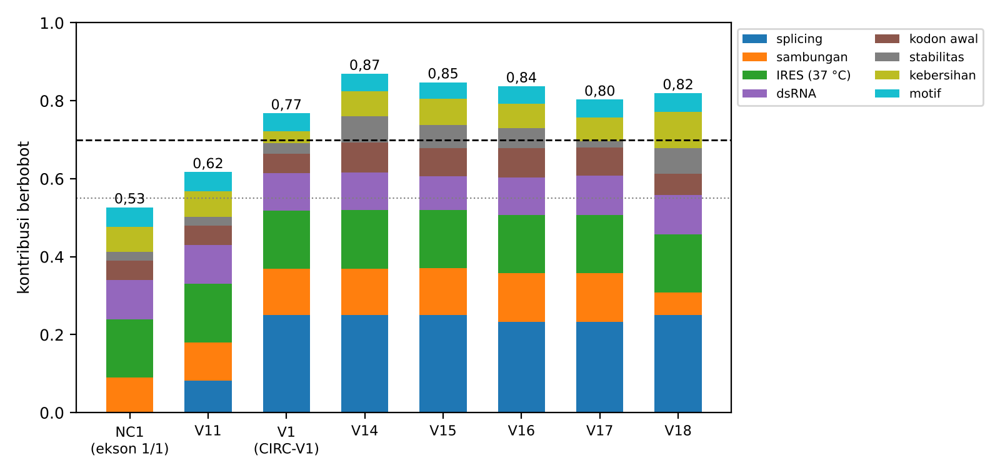
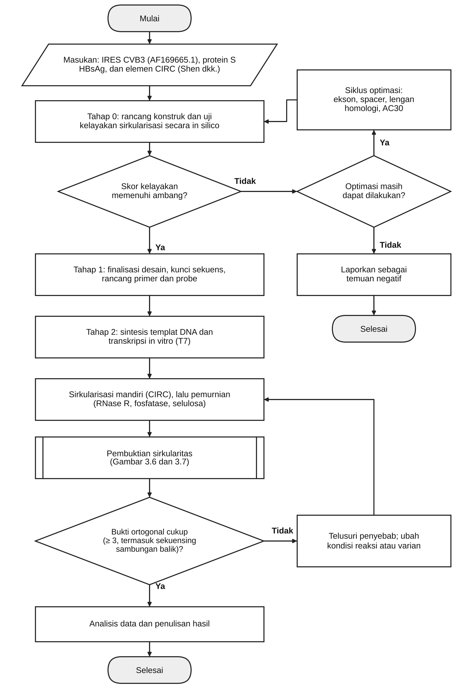
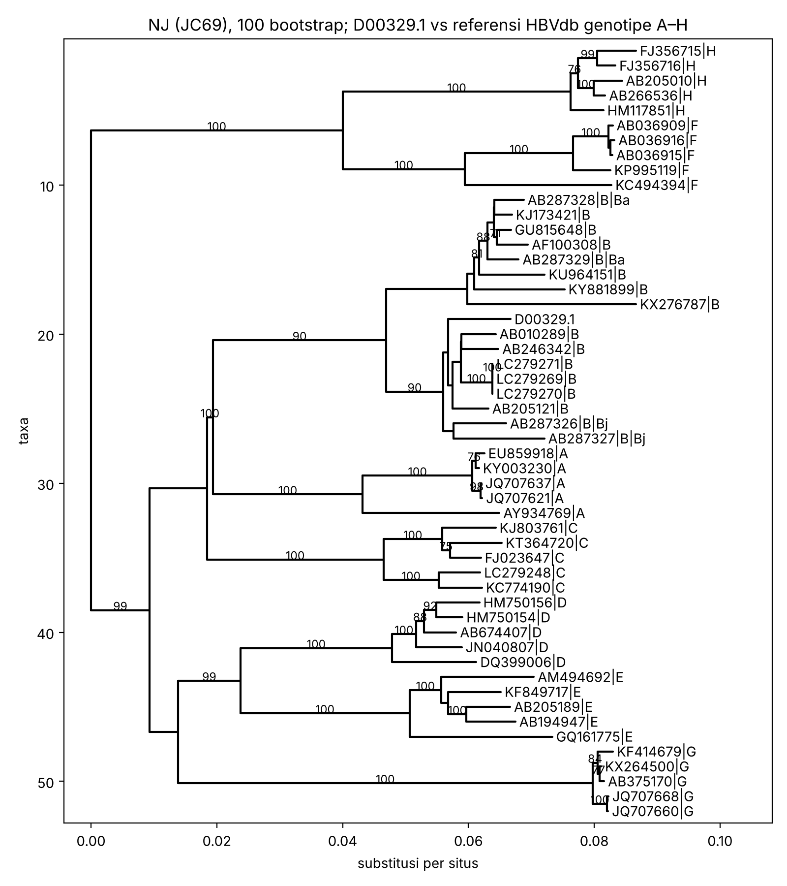
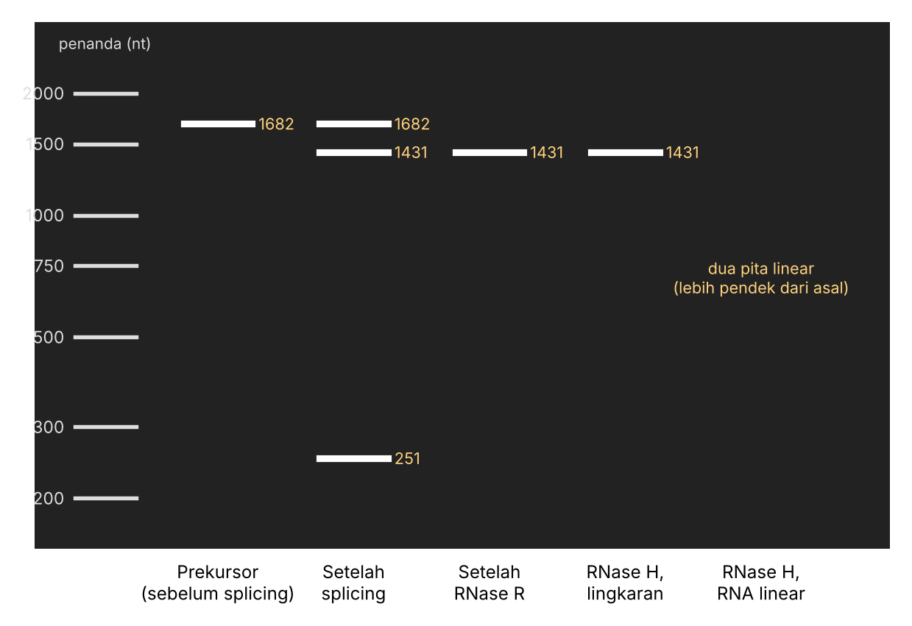
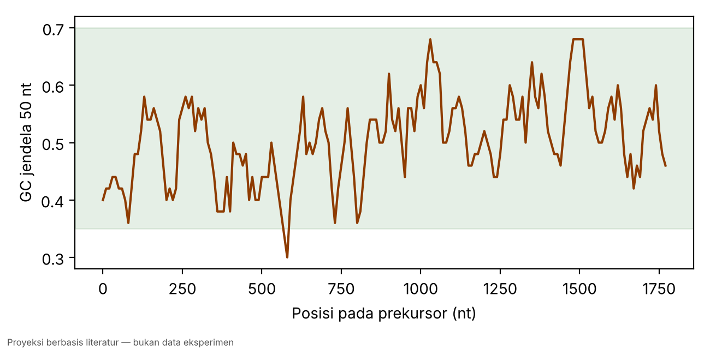
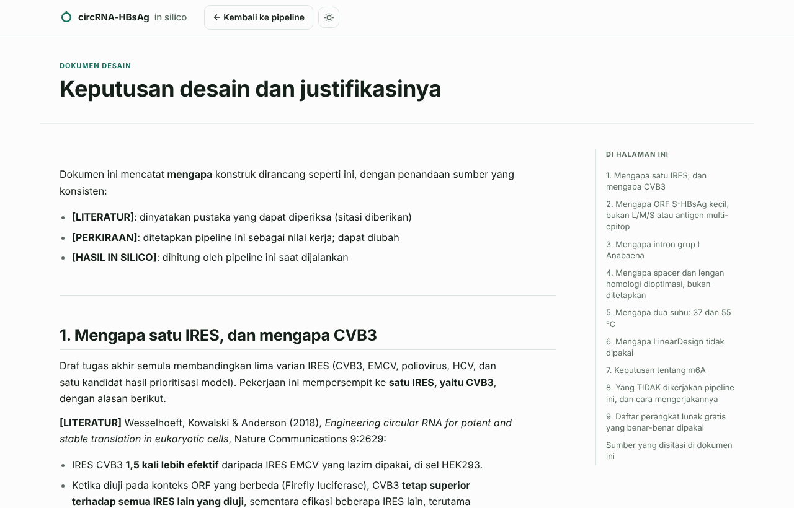

Mei 2026: pencarian sekuens dan kajian literatur
Pekerjaan dimulai dengan mencari sekuens acuan dan menghubungkannya dengan kajian literatur.
Sumber: catatan penulis
35 catatan, 26 Oktober 2026 – 20 November 2026 (didahului kajian awal sejak Mei 2026). Semua waktu dalam WIB (UTC+7). Angka hasil in silico tidak boleh dibaca sebagai data eksperimen; setiap entri menyebut sumbernya. Hal yang belum diverifikasi ditandai [PERLU VERIFIKASI], bukan dikarang.
Titik = satu catatan; klik untuk melompat ke entrinya. Fase 2 (pipeline) dan fase 3 (dokumen) berjalan paralel pada 16–18 Nov.
Pekerjaan dimulai dengan mencari sekuens acuan dan menghubungkannya dengan kajian literatur.
Sumber: catatan penulis
Pencarian sekuens dan upaya menghubungkan hasil kajian literatur berlanjut.
Sumber: catatan penulis
Kegiatan yang sama berlanjut pada bulan-bulan berikutnya. Rincian per bulan belum dicatat.
Sumber: catatan penulis
Rujukan jurnal (11 PDF) dan rencana awal proyek dikumpulkan sebagai dasar perancangan.
Sumber: dokumen proyek
Rencana langkah demi langkah: in silico, perakitan (Golden Gate atau Gibson), optimasi IRES, dan kendali mutu.
Sumber: catatan kerja proyek
Flowchart metode dengan parameter checkpoint, standar kerja di Benchling/SnapGene, dan pertimbangan apakah model AI perlu dilatih lebih dulu.
Sumber: catatan kerja proyek
Pipeline in silico Tahap 0/1 untuk konstruk circRNA-HBsAg (PIE, IRES CVB3).
Sumber: riwayat git · commit b8ba286
Software wajib gratis, optimasi dibantu AI, repositori GitHub dan situs untuk proyek in silico, hanya satu IRES, dan kelayakan sirkularisasi HBsAg diprediksi in silico lebih dulu.
Keputusan
Sumber: catatan kerja proyek
Sekuens acuan harus disediakan dengan nomor aksesinya; sementara itu dipilih desain kerja.
Keputusan
Sumber: catatan kerja proyek
Tutorial yang menghubungkan tahap in silico, in vitro, dan in vivo disusun.
Sumber: dokumen proyek
Modul inti (ViennaRNA, RNAplfold, optimizer kodon, skor GO/NO-GO) dijalankan ujung ke ujung dengan sekuens acak berlabel DEMO.
Sumber: catatan kerja proyek
Sembilan uji Gate 0 dan design_lock.json (9f92380); content/ menjadi sumber tunggal untuk situs, docx, dan naskah dek (4d423fd); Uji 2 memakai Infernal 1.1.5 dan model Rfam RF00028 dengan kontrol positif (1884cb4); label DEMO untuk keluaran placeholder (b14be9f).

Sumber: riwayat git · commit 9f92380, 4d423fd, 1884cb4, b14be9f
Satu parameter per iterasi: lengan homologi 40→20 nt meloloskan Uji 3; GC spacer 0,55 meloloskan Uji 9. Uji 2 tetap FAIL pada data demo sehingga keputusan FAIL-PINDAH-JALUR. Skrip 01–12, aturan Snakemake gate0, laporan Gate 0, CITATION, CHANGELOG.

Sumber: riwayat git · commit 5800f65, 8ac61eb
Sekuens placeholder, tanpa gerbang keras gagal. Angkanya tidak dipakai sebagai hasil karena tidak ada nukleotida asli.
Sumber: catatan kerja proyek
24 trial NSGA-II, 16 titik Pareto; spacer 25/50 nt, tanpa lengan homologi. Khusus sekuens placeholder.
Angka ini kemudian digantikan (lihat 18 Nov): dihitung sebelum batas GC/poly-U disatukan dengan Gate 0.
Sumber: catatan kerja proyek
Rencana komprehensif yang berjalan di macOS, memakai alat gratis, otomatis, dan dapat diskalakan ke data besar. Semua logbook dan notebook dipublikasikan di GitHub.
Sumber: catatan kerja proyek
Pipeline, repositori, dan situs memakai satu berkas kunci desain agar angka konsisten di semua keluaran.
Keputusan
Sumber: catatan kerja proyek
Situs dibangun ulang dengan toggle tema, daftar isi, dan pemindai sekuens yang berjalan di peramban.
Sumber: catatan kerja proyek
Pipeline, dokumentasi, dan halaman justifikasi desain dapat diakses publik.

Sumber: catatan kerja proyek
SOP in vitro (14 tabel), protokol in vivo, serta hasil yang diharapkan dan interpretasinya disusun.
Sumber: dokumen proyek
Bahan, alat, resep bufer dan medium, langkah per tahap sampai QC, kontrol, troubleshooting, keselamatan. Nomor katalog bertanda perlu verifikasi karena tidak berasal dari sumber proyek.
Keluaran
Protokol_Lengkap_in-vitro_circRNA-HBsAg_v1.docxSumber: catatan kerja proyek
40 trial, 24 titik Pareto; spacer 50/30 nt polyAC, lengan 9 nt. Menggantikan 0,7228. README, PLANNING, dan LOGBOOK repo diperbarui.
Sumber: riwayat git · commit 3d987b6
SOP, protokol in vivo, troubleshooting, dan protokol in vitro memakai prekursor 1827 nt, lengan 20 nt, serta skor 0,6922 dan 0,7437.
Sumber: catatan kerja proyek
Garis besar alur in vitro, rincian per tahap, konsep optimasi, bobot dan ambang kriteria, serta lima gerbang keras.
Sumber: catatan kerja proyek
Analisis dirancang agar ORF HBsAg dan IRES dinilai bersama dalam satu konstruk.
Sumber: catatan kerja proyek
AF081 hanya fragmen 276 nt (92 aa, tanpa ATG), sehingga tidak cukup sebagai ORF. Analisis parsial memakai IRES AF169665.1. Pertanyaan terbuka: pakai fragmen atau ORF S penuh, intron/spacer/lengan belum ada, batas IRES, dan bobot skor yang berbeda dari kode repositori.
Sumber: dokumen proyek
Fragmen tidak dipakai; ORF S penuh dipilih untuk analisis.
Keputusan
Sumber: catatan kerja proyek
Skor konstruk dasar 0,599 dengan IRES utuh 94,7%, tetapi kontrol negatif 0,619, lebih tinggi daripada dasar. Ditulis sebagai temuan, bukan disembunyikan.
Sumber: dokumen proyek
ORF S 226 aa diekstrak dari HBV D00329.1 (subtipe adw). Paper acuan memakai desain CIRC (intron utuh tanpa lengan homologi), sehingga rancangan mungkin berpindah dari PIE ke CIRC. Sekuens ini kemudian diganti (lihat entri 20 Nov berikutnya).
Keputusan
Sumber: catatan kerja proyek
Intron, ekson, dan lengan dari Shen 2025; IRES AF169665.1; ORF S dari D00329.1. V11 terbaik di 0,544, V1 gagal pada situs BsmBI, dan kontrol negatif V10 (0,568) malah tertinggi sehingga rubrik dinyatakan belum valid.

Sumber: dokumen proyek
Per kandidat dua versi: produk circRNA bertopologi circular (peta lingkaran tersedia) dan templat T7 linear. Masalah 'Circular Map tidak ada' diselesaikan dengan topologi di LOCUS.
Keluaran
genbank_SnapGene_Benchling.zipcircHBsAg_V*_circRNA_CIRCULAR.gbcircHBsAg_V*_templat_T7_LINEAR.gbSumber: dokumen proyek
Memindai 45 desain (35 GO, 10 GO-BERSYARAT, 0 NO-GO), desain IRES terbelah tanpa bekas, mutagenesis kodon sinonim dengan CAI minimal 0,85. Ambang 0,70 tidak diturunkan. Rubrik lama diperbaiki setelah melihat hasil. Skor adalah prediksi yang dioptimasi terhadap rubrik yang sama dengan penilainya, bukan bukti sirkularisasi di lab.
Keputusan

Sumber: dokumen proyek
Untuk V14, V18, dan V1, disertai penjelasan dasar mutagenesis, makalah rujukan, dan prinsip optimasi. Sedang dikerjakan.
Sumber: catatan kerja proyek
ORF HBsAg diganti dengan CDS 157..837 (226 aa) dari catatan GenBank U95551.1 (subtipe ayw, klon 2.2.15). Terjemahannya cocok dengan protein AAB59969.1. Koordinat 155–835 bergeser 2 nt dan salah kerangka. Label D00329.1 sempat terpasang di repositori lalu dikoreksi karena protein berbeda di 20 posisi.
Keputusan
Keluaran
data/reference/hbsag_S_protein.fadata/reference/hbsag_S_CDS_AAB59969.1.faSumber: riwayat git
scripts/13_export_workbook.py meratakan semua JSON/TSV satu run (varian, uji, skor, bobot, primer, motif, kodon, sekuens) menjadi satu berkas xlsx dan CSV per sheet, serta ikut Snakemake. Contoh dari run DEMO, angkanya placeholder.
Keluaran
scripts/13_export_workbook.pyresults/<run>/tables/circhbsag_hasil_lengkap.xlsxSumber: riwayat git
Skor komposit bukan ukuran yang sama sepanjang waktu: rubrik diganti antara 19 dan 20 Nov (lihat catatan 20 Nov), dan baris placeholder tidak sebanding dengan baris sekuens nyata.
| Tanggal | Apa | Skor | Keputusan | Status |
|---|---|---|---|---|
| 17/11/2026 | Demo dasar (placeholder) | 0,62 | GO-BERSYARAT | DEMO |
| 17/11/2026 | Optuna 24 trial (placeholder) | 0,7228 | GO | DIGANTIKAN |
| 17/11/2026 | Dasar setelah redesain Gate 0 (placeholder) | 0,6922 | GO-BERSYARAT | DEMO |
| 18/11/2026 | Optuna 40 trial (placeholder) | 0,7437 | GO | DEMO |
| 19/11/2026 | Dasar sekuens simulasi, rubrik v1 | 0,599 | rubrik belum valid | SIMULASI |
| 20/11/2026 | Terbaik V11 (ORF D00329.1, rubrik v1) | 0,544 | tak ada yang ≥ 0,70 | HASIL IN SILICO |
| 20/11/2026 | Terbaik V14 (ORF D00329.1, rubrik v2; dihitung ulang) | 0,8694 | GO | HASIL IN SILICO |
Gambar hasil in silico berasal dari analisis proyek ini; tidak ada gambar jurnal berhak cipta di halaman ini.







Linimasa ditulis dari satu berkas sumber, content/timeline.yaml, lalu dihasilkan oleh tools/logbook.py.
Setiap entri menyebut sumbernya dan generator menolak entri tanpa sumber. Catatan lengkap pipeline ada di
docs/LOGBOOK.md.